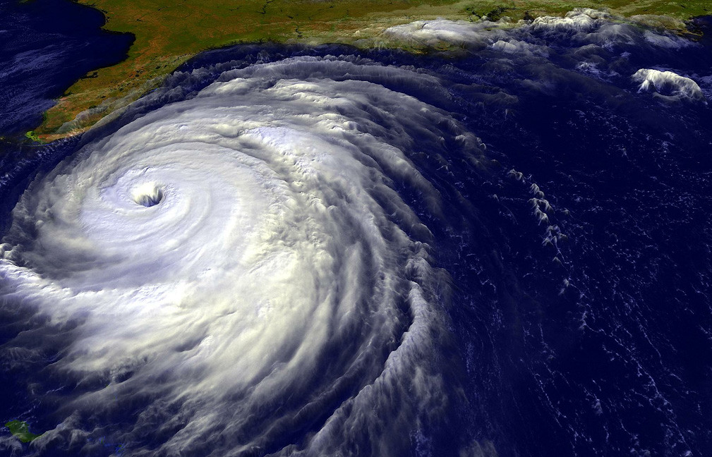
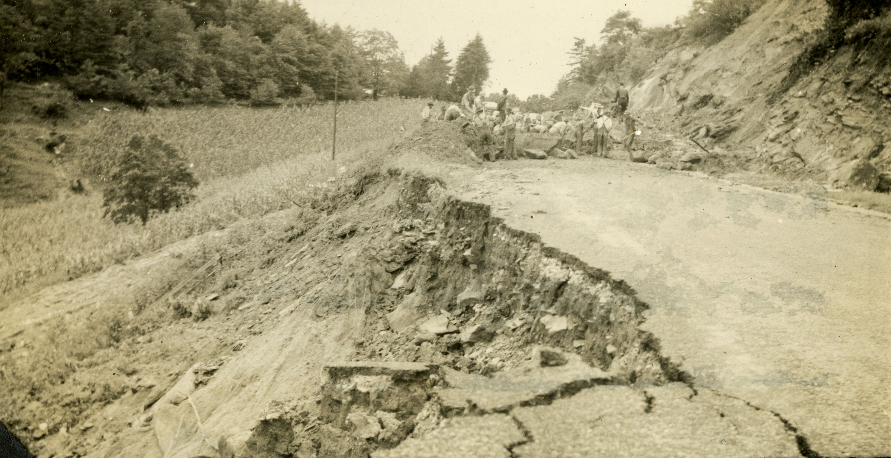
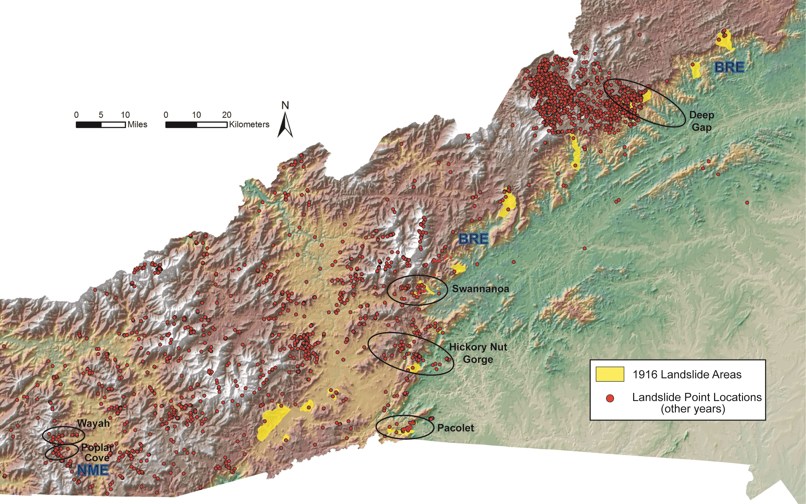
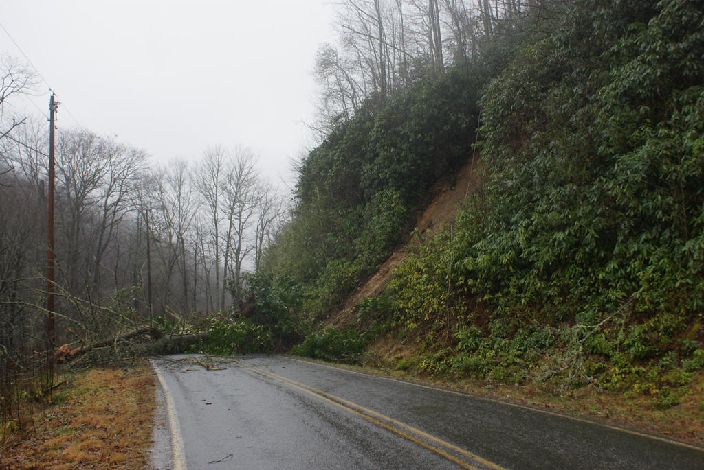
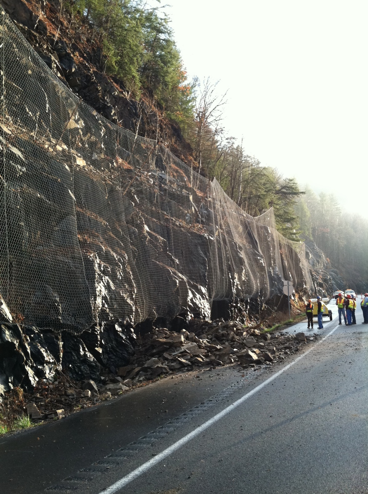
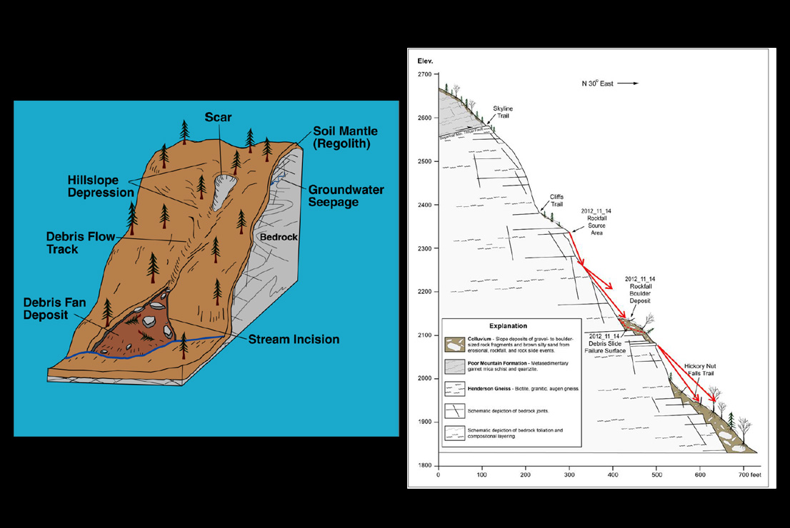

Introduction
A landslide is the movement of a mass of rock, debris, or earth down a slope. Landslides are one type of what geologists call "mass wasting"—any movement of soil and rock down a slope that moves as a mostly unified mass under the influence of gravity.
NCGS geologists have investigated over 200 landslides in the Blue Ridge Mountains of western North Carolina. These landslides have resulted in five deaths, destroyed more than 25 homes and damaged at least 40 others, and impaired nearly 80 roads.
Read on to learn more about the types of landslides, what causes them, and explore maps developed by NCGS to learn where landslides have occurred in the past and the potential for future risk.
To explore historical landslides in the region, please visit Historical Landslides in Western North Carolina.

What is a Landslide?
A landslide is the movement of a mass of rock, debris, or earth down a slope. The word "landslide" encompasses five types of slope movement: falls, topples, slides, spreads, and flows.

A soil or rock mass moves downslope on a surface of rupture. Slides can be rotational (curved surface) or translational (planar surface). Both can be caused by intense rainfall or rises in groundwater.
Rock or soil detaches from a steep slope and descends rapidly by falling, bouncing, or rolling. Triggered by undercutting of slopes, weathering, human activity, or earthquakes.
A mass of soil or rock rotates forward out of a slope. Can be triggered by water or ice in cracks, vibration, undercutting, differential weathering, and stream erosion.
A continuous movement of material down a slope resembling a fluid. Includes debris flows, debris avalanches, earthflows, and creeps. The most common type in western NC.
A mass of soil or rock expands as the fractured mass sinks into soft underlying material. Includes block spreads, liquefaction spreads, and lateral spreads.
These slope movements are further subdivided by the type of geologic material involved: bedrock, debris, or earth. The type of movement and material determines the potential speed, distance traveled, volume of displaced material, and possible impacts.
"Every landslide, or slope movement, is unique and often unpredictable. Landslide events are best evaluated on a case-by-case basis."


Anatomy of a Landslide
Multiple debris flows can happen in the same location, creating features called "composites." Debris flows can become inactive, and older debris flows can reactivate.
A scarp is the edge of a steep slope of a debris flow, and an initiation zone (or process point) is where a debris flow initiates. Ground rupture lines appear at the upper edge of the vertical offset along the scarp.
Key term: The initiation zone is where a debris flow starts — typically in depressions, hollows, the headwaters of mountain streams, or where bedrock is overlaid with a thin layer of soil no more than six feet deep.
Common Landslide Types
Common landslide types in western North Carolina include debris flows, debris and earth slides, and rock slides.

Debris Flows
Debris flows are rapidly flowing mixtures of soil, rock particles, and water — often called "mudslides." This is the most common type of the 3,290 landslides that occurred before June 30, 2011, in western North Carolina. Debris flows typically begin with a mass of rocky silt-sand with low clay content, allowing the soil mass to "liquefy" in heavy rains and move at speeds approaching 30 miles per hour.
Debris flows often begin in depressions, hollows, the headwaters of mountain streams, and in areas where bedrock is overlaid with a thin layer of soil at most six feet deep.

Debris and Earth Slides
Debris (soil-rock mixture) or earth (clay-silt soil) slides move at a slower rate than debris flows because the water content is too low for the mass to liquefy. High clay content causes more cohesive material that typically moves at several inches or feet per day.
After initial movement opens tension cracks and scarps, water can infiltrate deeper into the slide mass. In wet conditions, movement can become self-perpetuating as additional water further destabilizes the material.

Rockslides and Rockfalls
Rockslides and rockfalls usually occur along roadways, but can occur on any modified or natural rock slope. They occur on steep, exposed faces made of bedrock or boulder-rich rock deposits and are common along major transportation routes in western North Carolina.
Where Do Landslides Occur?

Landslides can take place almost anywhere in the world in a variety of landscapes — including cultivated lands, slopes, and forests — and do not necessarily happen on steep slopes. However, certain types of landslides are associated with hilly and mountainous terrain.
Natural patterns like climate, wildfire, and the courses of streams and rivers also influence where landslides occur, as do human activities such as clearing trees and vegetation and construction on slopes.
Some types of landslide only occur in specific terrains or in the presence of particular geologic materials. Debris torrents take place in channels and ravines; rockfalls occur on steep, exposed faces of bedrock or boulder-rich deposits.
What Causes Landslides?
Landslides are triggered primarily by natural occurrences—including rain, melting snow, changes in water level, stream erosion, changes in groundwater, earthquakes, and volcanoes—and by human activity. Factors such as soil type, landform, and geology also influence landslide events.
Rainfall triggers in Western NC:
Heavy rainfall and the subsequent increase in groundwater is the most common trigger for landslides in western NC. Widespread occurrence typically occurs when 10+ inches of rain falls within 24 hours. Localized landslides typically occur when at least 5 inches falls within a 24-hour period.
Widespread development of landslides coincides with major rainfall events, particularly those that occur as the remnants of tropical storms pass into the mountains.

Human Activities That Contribute to Landslides
- Altering drainage patterns, clearing vegetation, and destabilizing slopes by undercutting a slope bottom and/or loading the top beyond its bearing strength
- Irrigation, draining or creating reservoirs, and improper slope excavation
- Lack of compaction during construction, inadequate ground surface preparation, large woody debris, and incorporation of untreated acid-producing rock into embankments
Field investigations have determined that many debris flows and landslides have occurred where slope modification by humans was a contributing factor. The majority were fill failures that mobilized into damaging debris flows and debris slides.
"In western North Carolina, debris flows can be triggered by rainfall events with lower rates and durations on slopes modified by human activity — landslides have been triggered by as little as three inches of rainfall in a 24-hour period on modified slopes with pre-existing signs of instability."
From January to July 2013, multiple above-normal rainfall events caused significant landslides in the Asheville area. Six storm events triggered slope failures in western North Carolina during this long period of above-normal rainfall.
Landslide Hazard Maps
The landslide hazard mapping program is intended to provide the public, local government, and state emergency agencies with a planning tool indicating areas where landslides have occurred in the past and those areas vulnerable to future slope movements.
The data produced by the landslide hazard mapping program are described below. Browse the data to learn landslide terminology and how they contribute to understanding landslide events in western North Carolina.
Note: The maps below are static. You can interactively explore the data in the WNC Landslide Hazard Data Viewer, which allows you to click on each element to learn additional information.

Landslide points identify the initiation (source) of slope movements. Attributes include descriptions of slope movement type, location, dimensions, movement dates, and geomorphic, hydrologic, and other site data for individual slope movements, where known.

Landslide outlines show the approximate areal extents of relatively recent, individual slope movements where their initiation (source) areas are known. Outlines were determined from field investigations, aerial photography (1940–current), and digital maps derived from LiDAR digital elevation models.

Landslide deposits represent the areal extents of significant volumes of earth, debris, and rock fragments that have accumulated primarily as a result of past debris flows and debris slides. These deposits indicate areas that can be affected by future landslides. Debris flow deposits mainly occur in valleys and can transition upslope into debris slide, rock fall, and rock slide deposits nearer steep source areas.

The Potential Debris Flow Pathways layer shows where landslides have gone in the past and where they might go in the future, delineating areas likely to be in the path of potential slope movements. While areas outside the pathway areas are unlikely to be damaged by landslide activity, modification of slopes could result in slope movements outside the marked areas.

The Probability of Sliding map is a susceptibility map indicating where landslides may initiate. The predicted relative hazard rankings (High and Moderate) indicate susceptibility of shallow, translational slope movements in response to a rain event of approximately 5–6 inches or more within a 24-hour period. This data forecasts where slope movements are more likely to initiate — it does not predict that they will occur.
Learn More
Explore historical landslide events and more in StoryMaps, access digital copies of printed educational materials, and access tools and resources on the project website.
Acknowledgments
References
Unless otherwise noted, all images and maps were provided or created by the North Carolina Geological Survey or UNC Asheville's NEMAC. Image credits listed in order of appearance.
- The Landslide Handbook—A Guide to Understanding Landslides (PDF) — U.S. Department of the Interior | U.S. Geological Survey, Circular 1325
- Landslide Types and Causes | Recognizing Landslides — NC Department of Environmental Quality | NC Geological Survey
- Landslides and Landslide Hazards — NC Mountain Resources Commission | Western North Carolina Vitality Index
- Buncombe County Hazards Maps — NC Department of Environmental Quality | NC Geological Survey
- Hero image: "Wintergreen - Blue Ridge Mountains" by Dave Buchhofer, CC BY-NC-ND 2.0, via Flickr
- Rockslide image: "Rockslide near Mile Marker 7 on I-40" by NCDOT Communications, CC BY-NC 2.0, via Flickr
- Landslide types diagram: "Figure 3," in Landslide Types and Processes Fact Sheet 2004-3072, U.S. Geological Survey
- Slide on NC 194: "Slide Area" by NCDOT Communications, CC BY 2.0, via Flickr
- Rockslide on I-40: "Rockslide near Mile Marker 7 on I-40" by NCDOT Communications, CC BY 2.0, via Flickr
- Polk County slide: "IMG_5620" by NCDOT Communications, CC BY 2.0, via Flickr
- Mountain panorama: "Roan Mountain (Round Bald) panorama with rain" by Dallas Krentzel, CC BY 2.0, via Flickr
- Mudslide: "Black Camp Road, Haywood County" by NCDOT Communications, CC BY 2.0, via Flickr